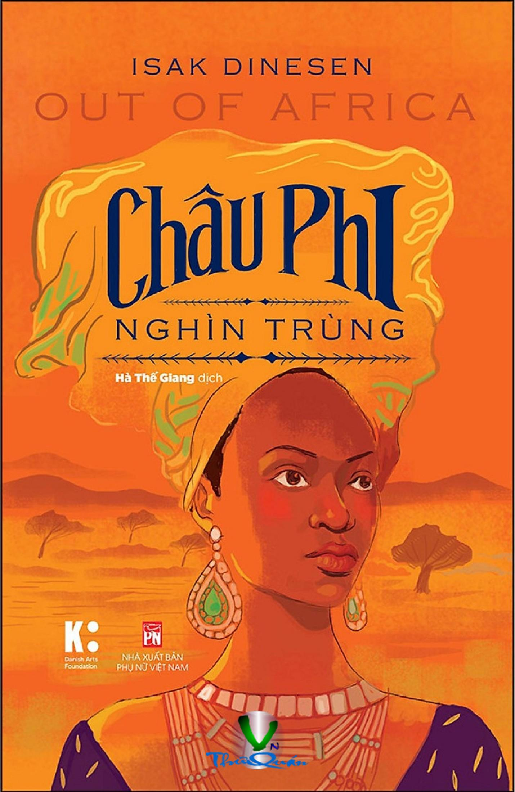

« Back
Châu Phi Nghìn Trùng
By Isak Dinesen

Lời Giới Thiệu
☆ ☆ ☆
Phần Ikamante Và Lulu
Chương 1
Chương 2
Chương 3
Chương 4
Phần Iimột Tai Nạn Súng Ở Đồn Điềnchương 1
Chương 2
Chương 3
Chương 4
Chương 5
Phần Iiicác Vị Khách Của Đồn Điền
Chương 1
Chương 2
Chương 3
Chương 4
Chương 5
Chương 6
Chương 7
Chương 8
Phần Ivtrích Sổ Tay Một Người Nhập Cư
Đom Đóm
Những Con Đường Đời
Chuyện Về Esa
Cự Đà Xanh
Farah Và Chàng Lái Buôn Thành Venice
Lớp Người Tinh Hoa Ở Bournemouth*
Vì Niềm Kiêu Hãnh
Lũ Bò
Về Hai Chủng Tộc
Một Cuộc Lữ Hành Thời Chiến
Hệ Số Đếm Trong Tiếng Swaheli
“Tôi Chẳng Để Người Đi Trừ Phi Người Ban Phước Cho Tôi”*
Nhật Thực
Dân Bản Xứ Và Thơ
Chuyện Về Thiên Niên Kỉ Mới
Chuyện Về Kitosch
Một Số Loài Chim Châu Phi
Pania
Cái Chết Của Esa
Về Người Bản Xứ Và Lịch Sử
Trận Động Đất
George
Kejiko
Hươu Cao Cổ Đi Hamburg
Tại Gánh Xiếc Thú
Những Du Khách Đồng Hành
Nhà Tự Nhiên Học Và Lũ Khỉ
Karomenya
Pooran Singh
Một Sự Việc Kì Lạ
Con Vẹt
Phần Vtừ Giã Đồn Điền
Chương 1
Chương 2
Chương 3
Chương 4
Chương 5